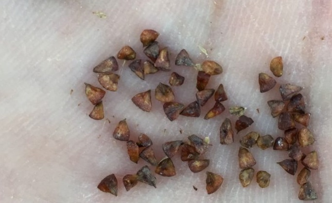

كيف ازرع منزلي
مبــاشرة : بان نحفر للبذرة حفرة يكون عمقها ضعف طول البذرة , نضع البذرة ثم نغطيها ونسقيها
عن طريق الاشتال : تشترى الاشتال جاهزة ثم تزرع في التربة
تنثر نثراً : تستخدم هذه الطريقة للبذور الصغيرة جداً فتنثر على التربة ثم نقوم بقلب التربة حتى تدفن هذه البذور
الاثلام : صناعة خطوط في التربةة تكون على شكل هضاب صغيرة تزرع البذة على رأس الهضبة
إنتاج نباتات الزينة بواسطة زراعة البذور يعتبر من أقل الطرق تكلفة، لكون البذور متوفرة ورخيصة الثمن، (عدا المهجن منها فهو مرتفع السعر) وننصح بشرائها من مصادر موثوقة، وتكون مغلفة بغلاف جيد يحميها، وإذا كنت أنت من ينتجها فاحرص على تغليفها جيداً وخلطها مع مبيد فطري وآخر حشري، ثم تحفظ في مكان جاف وبارد ومظلم حتى يحين وقت استخدامها.

الأدوات والمواد اللازمة لزراعة البذور
تربة زراعية (كمبوست) يخلط معها قليل من البيرلايت أو نشارة الخشب كي يكون الخليط مفككاً وذا تهوية جيدة. صياني من الفلين أو الخشب (تباع بالأسواق رخيصة الثمن)، ويمكنك صنعها بنفسك أو استخدام بدائل من ابتكارك أنت، ويشترط أن لا يتجاوز عمق التربة 5 إلى 7 سم. أداة ترش رذاذ الماء بشكل جيد (مِرَش أو بخاخ ماء).
منخل (غربال) بمقاسات للفتحات مختلفة حسب حجم البذور (اختياري). الأدوات المتعارف عليها مثل: مجرف صغير للتربة، ومشط زراعي يدوي صغير يمكنك شراؤه أو صناعته من خامات البيئة، وغيرها.
كيف نزرع البذور؟
البذور صغيرة الحجم
تنثر البذور فوق خليط التربة ونحرص على توزيعها بحيث تكون المسافات بينها متباعدة قليلاً إما باستخدام المنخل أو باليد وهي مهارة تأتي مع الممارسة وإذا خشيت من تقاربها فاستخدم المشط الصغير بتمريره بلطف على سطح التربة بعد نثر البذور من بداية الصينية حتى نهايتها بالطول والعرض كي نوزع البذور بشكل صحيح، كما يمكن خلط البذور مع عشرة أضعاف كميتها من الرمل الأحمر خلطاً جيداً ثم نثرها، وهذا يساعد كثيراً في تجانس توزيعها.
تغطى البذور (حسب الحاجة) بطبقة رقيقة من خليط التربة نفسه ثم ترش برذاذ الماء بلطف وتستمر تسقيها مرتين في اليوم بواسطة مِرَش الماء وذلك لضمان عدم بعثرة البذور ومن ثم تكدسها مع بعضها لأن ذلك يضعف نموها، ونستمر في السقي بهذه الطريقة حتى تبدأ بالإنبات وعندها ممكن نسقي بماء جاري خفيف.
البذور كبيرة الحجم
هذه توضع في صواني خاصة (ويمكنك استخدام الأصص البلاستيكية الصغيرة) مقسمة لعدة حفر كل حفرة مملوءة بخليط التربة وتغرس كل بذرة في حفرة وأحياناً توضع بذرتين من باب الاحتياط وعند الإنبات نختار البادرة الأقوى ونزيل الثانية، تغطي بطبقة رقيقة من خليط التربة وتسقى بالماء حتى تنبت. البذور كبيرة الحجم قاسية الغلاف
مثل: بذور الطلح، أو السدر، أو الباركنسونيا، أو الخروب، وغيرها فهذه لا بد قبل زراعتها من خدش الغلاف بطرقة أو بأخرى للسماح للماء بأن يدخل لجنين البذرة ويبدأ في الإنبات، فمثلاً لبذور الطلح يمكن استخدام مقص الأظافر لخدش الغلاف مع الحذر بأن لا نجرح الجنين بالداخل، كما يمكن في حالة السدر استخدام مطرقة صغيرة لكسر غلاف البذرة فيخرج منه بذرتين تغرس مباشرةً ويكون انباتها سريع.
في جميع الحالات السابقة يفضل أن نقوم بترطيب التربة قبل نثر البذور أو غرسها، وهذا يساعد على ثباتها في مكانها.
كما نلاحظ أنه كلما صغر حجم البذرة كلما كانت ليست بحاجة للتغطية بخليط التربة وكلما كبر حجمها كلما احتجنا لتغطيتها بسمك يصل أحياناً إلى 2 سم وهذا أمر يتم اكتسابه مع الممارسة ومعرفة النباتات.
ماذا بعد الإنبات؟
نستمر في سقي الشتلات حتى تصبح بحجم قوي يتحمل النقل أي تقريباً 15 سم وهذا يختلف حسب نوع النبات، ثم نقوم بنقلها بلطف دون إيذاء الجذور ونحرص على وجود التربة معها ثم تشتل في المكان الدائم وتروى بعد شتلها مباشرةً ري جيد.
زراعة البذور في المكان الدائم مباشرةً
هنا لابد من مراعاة ما يلي:
تأكد من مناسبة التربة للنبات. عليك حماية البذور بعد غرسها من الطيور. تأكد من خلو التربة من الآفات الآكلة للبذور وهذا يتم بتعقيم التربة كيميائياً أو بطرق مثل حرق مجموعة من النباتات والأخشاب الجافة فوق التربة، وتفليبها لقتل أي طفيليات فيها.
بعد تجهيز المكان الدائم ووضع وسائل الري مثل الري بالتنقيط، نسقي التربة بالتنقيط قبل غرس البذور بفترة كافية لترطيب مكان البذور، ثم نبدأ بغرسها على مسافات مناسبة بين البذرة والأخرى، والتي تختلف حسب اختلاف نوع النبات. نأمل أن يكون ما ذكرناه واضحاً ويمكن تطبيقه للجميع، ونشكر لكم طيب متابعتكم، وثقتكم الغالية.
3 ردود على "الموضوع "